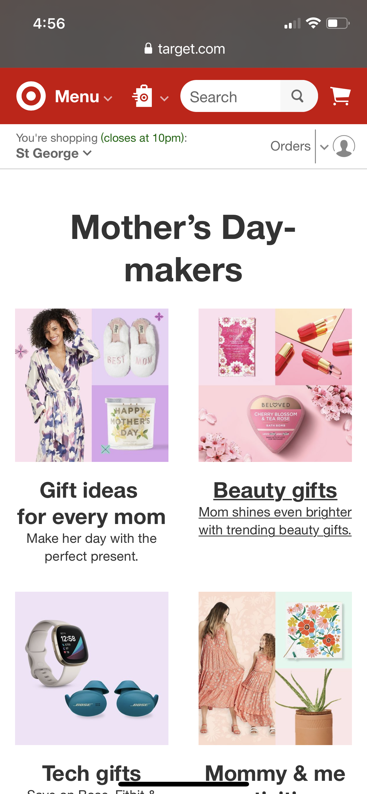

Rule of Thirds
Deseret Book
deseretbook.com
Here we can see that this web page applies to rule of thirds. First in the header the "Deseret Book" header is placed right on the left vertical line in the rule of thirds. We can also see that it is applied to the ad for the book "Reaching for the Savior". The image of the book occupies a similar spot. It catches the eye and draws the viewer in.
White Space and Clean Design
Target
target.com In this image we can see that the designer for this web page has applied the principle of white space and clean design. There is plenty of space between the images and text on this site. It gives the eyes and mind a rest. It encourages the user to read on.
PARC: Alignment
Adobe
adobe.com
This web designer used the principle of alignment. You can see in the image that the font on each of the image blocks are aligned to the left. The creates a strong line all the way down the page and it also ties the individual element into the overall design.